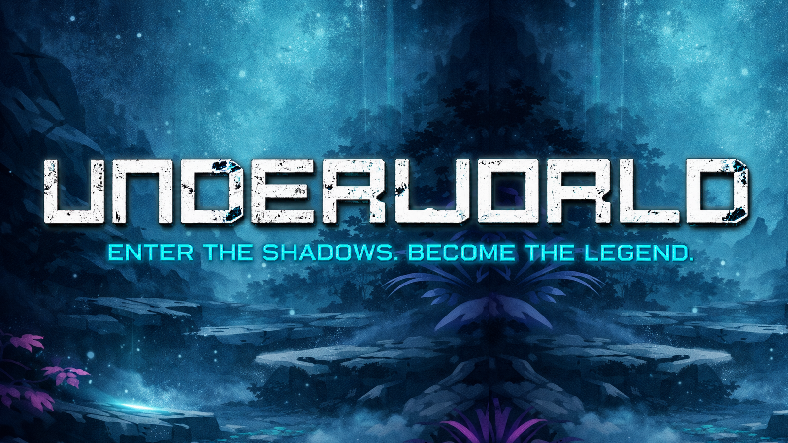
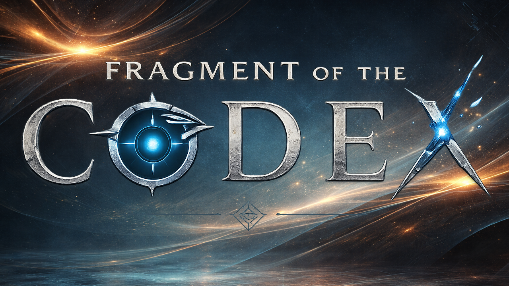
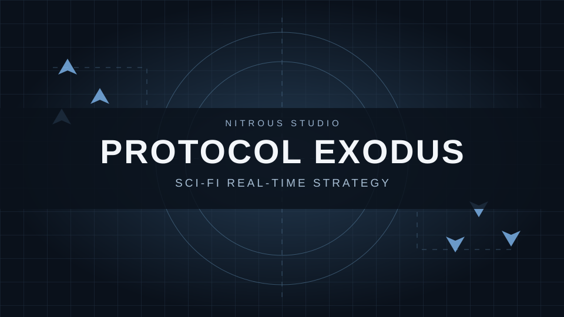
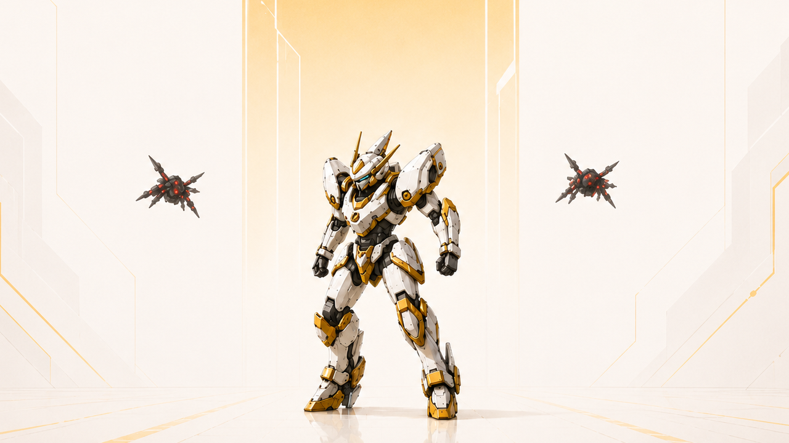
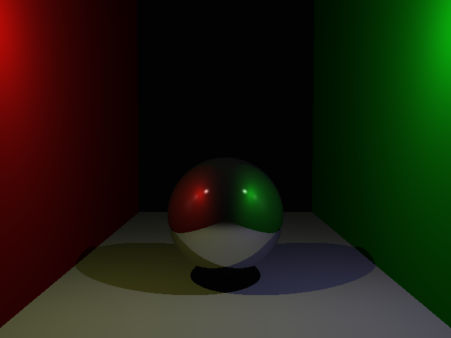
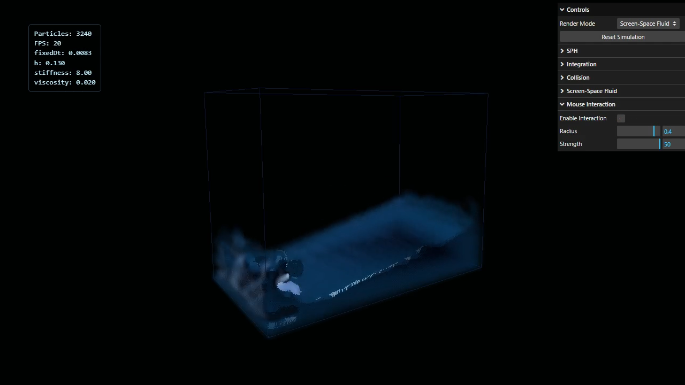
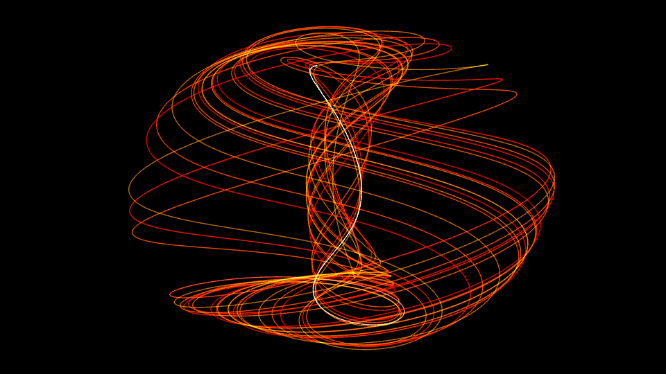

Underworld
A 2D sci-fi action-adventure developed in a two-person team, with combat, boss encounters and Metroidvania exploration.
View case study →
Gameplay · Simulation · Graphics
I build games, gameplay systems, simulations and realtime graphics. My background is in computer science and physics.
Game development
From released games to systems-driven projects in active development.

A 2D sci-fi action-adventure developed in a two-person team, with combat, boss encounters and Metroidvania exploration.
View case study →
A systems-driven fantasy action game exploring melee combat, boss intelligence, equipment and reusable gameplay architecture.
View case study →
A sci-fi RTS built around autonomous faction AI, shared navigation, economy, production and large-scale unit behavior.
View case study →Independent development
Playable prototypes, game jams and focused interactive experiments.

A battle-system experiment exploring turn-based gameplay mechanics.
Visit Nitrous Studio ↗Physics · Mathematics · Rendering
Where physical models, numerical methods and interactive software meet.

A raytracer built from scratch in C++, exploring geometry, illumination and distributed sampling for soft shadows.
Read technical article →
Particle-based hydrodynamics, numerical stability and realtime screen-space fluid rendering.

Interactive visualization of nonlinear dynamical systems using Runge–Kutta numerical integration.
Launch simulation ↗Tutorials · Devlogs · Knowledge sharing
Beyond developing games, I share practical implementation techniques, gameplay architecture and the process behind my projects through Unreal Engine tutorials and development videos.
Visit YouTube channel ↗Composition · Sound design · Production
Electronic production, progressive metal and metalcore — another side of my creative work, spanning composition, recording and sound design.
Electronic production video ↗Technical writing
Implementation decisions, algorithms and research behind the work.
Movement problems in dense RTS unit groups and the architecture used to address them.
Ray intersection, illumination and distributed sampling.
Comparing particle-based and grid-based methods through the lid-driven cavity problem.
Exploring the electronic structure of graphene through a tight-binding model.
Explore the gameplay framework and reusable systems in the project showcase.